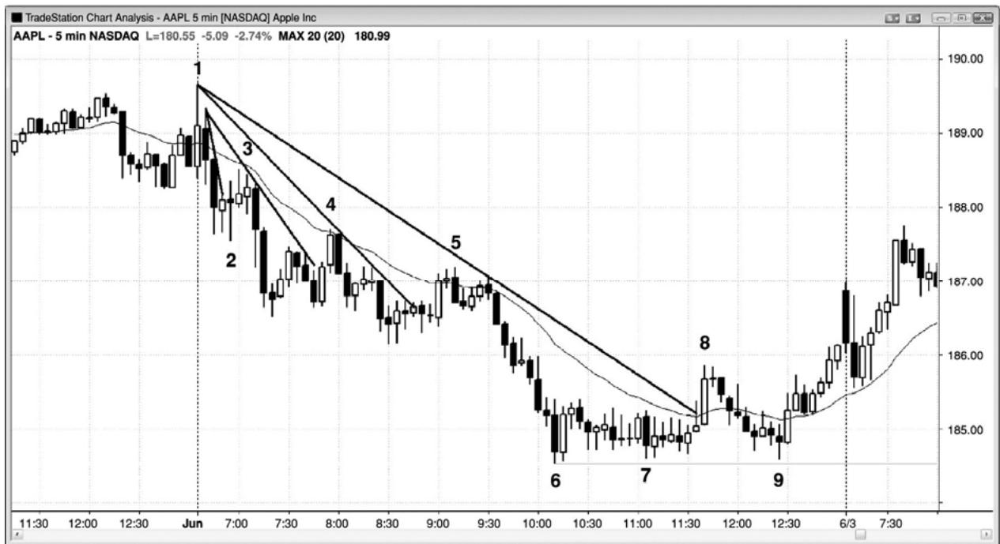
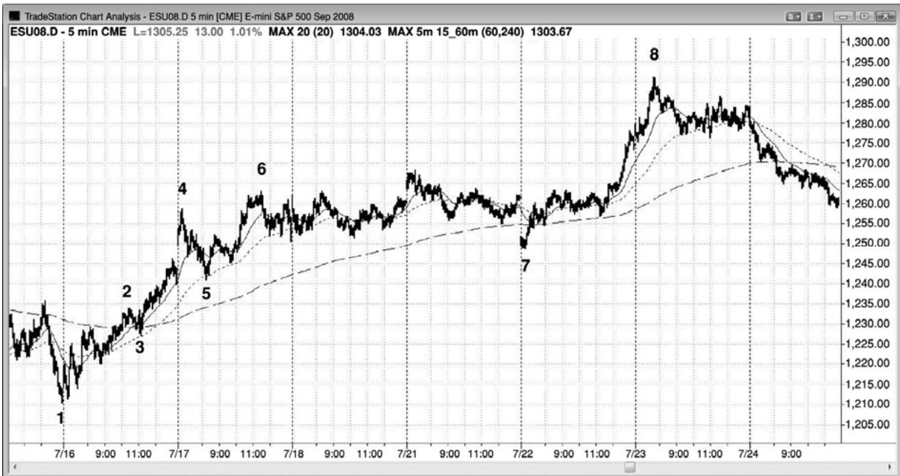

第11章 第一回撤序列¶
第 11 章 第一回撤序列：棒线、微型趋势线、均线、均线缺口、主要趋势线
趋势中可能出现多种回撤，有的深有的浅，可以根据它们的幅度进行分类和评级。其中任意一个首次出现都是那种类型回撤的第一回撤。每个序列回撤将是更大回撤中的第一个，每个回撤之后，市场通常都会测试趋势极点，因为强运动通常至少包含两条腿。所以，每种类型的第一波逆势运动之后，很可能出现另一条趋势方向上的腿形。回撤不必以完全相同的顺序出现。举例说明，有时如果趋势在高点2之后加速，那么高点1将出现在高点2之后。
随着多头趋势不断行进，它最终会失去动能，出现更多的双向交易，开始形成回撤。回撤变得越来越大，演变为交易区间，交易区间最后将反转进入空头趋势。在最后反转之前，每一波逆势运动之后通常都是又一个趋势中的高点。因此，每个弱势征兆理论上都是一个买进架构，在下列其他类型的征兆形成前，每个弱势征兆可能会出现若干次。另外，一个征兆出现了，在其他征兆出现后，它可能再次出现。
下面是多头趋势中弱势征兆形态的一般顺序：
多头实体变得越来越小。
上尾线开始形成，随后棒线的尾线变得越来越长。
棒线与各自的前一棒的重叠越来越大。
棒线实体非常小，或者呈十字星。
出现一条空头棒。
当前棒线的高点位于或低于前一棒高点。
当前棒线的低点位于或略高于前一棒低点。
当前棒线的低点低于前一棒低点。
出现单腿回撤（高点 1 买进架构），其中棒线高点低于前一棒高点。
出现仅持续 5 到 10 棒左右的两条腿回撤（高点 2 买进架构）。
出现仅持续5到15棒左右的三条腿回撤（楔形多头旗形或三角形）。
出现微型多头趋势线突破。
一棒触及均线（20 缺口棒买进架构）。
下一波创出新高的反弹包含一条或多条空头趋势棒以及一两次回撤。
一棒收盘低于均线。
一棒高点低于均线（均线缺口棒）。
重要多头趋势线被突破。
一旦出现高点低于均线的一棒，那么在市场向上折返并超越均线前，就会形成第二条下跌腿。
创出新高的反弹包含两个或多个回撤，每个回撤持续两到三棒，而且拥有更为突 出的空头实体。
出现一波较大的两条腿回撤，持续时间大于 10 棒，第二条腿跌破一个显眼的更高低点，形成一个更低低点。
市场进入交易区间，多头棒和空头棒几乎平分秋色。
市场向上突破交易区间，返回交易区间内，形成更大的交易区间。
下面是空头趋势变弱的序列：
空头实体变得越来越小。
下尾线开始形成，随后棒线的尾线变得越来越长。
棒线与各自的前一棒的重叠越来越大。
棒线实体非常小，或者呈十字星。
P118
出现一条多头棒。
当前棒线的低点位于或高于前一棒低点。
当前棒线的高点位于或略低于前一棒高点。
当前棒线的高点高于前一棒高点。
出现单腿回撤（低点 1 买进架构），其中棒线低点高于前一棒低点。
出现仅持续 5 到 10 棒左右的两条腿回撤（低点 2 卖出架构）。
出现仅持续 5 到 15 棒左右的三条腿回撤（楔形空头旗形或三角形）。
出现微型空头趋势线突破。
一棒触及均线（20缺口棒卖出架构）。
下一波创出新低的反弹包含一条或多条多头趋势棒以及一两次回撤。
一棒收盘高于均线。
一棒低点高于均线（均线缺口棒）。
重要空头趋势线被突破。
一旦出现低点高于均线的一棒，那么在市场向下折返至均线下方前，就会形成第二条上涨腿。
创出新低的反弹包含两个或多个回撤，每个回撤持续两到三棒，而且拥有更为突 出的多头实体。
出现一波较大的两条腿回撤，持续时间大于 10 棒，第二条上涨腿向上超越一个显眼的更低高点，形成一个更高高点。
市场进入交易区间，多头棒和空头棒几乎平分秋色。
市场向下突破交易区间，返回交易区间内，形成更大的交易区间。
大部分首次回撤都比较小，仍然是较大趋势的第一条腿的一部分。然而，当逆势交易者们变得越来越愿意建仓，顺势交易者们变得越来越快地获利了结时，每个回撤倾向于越来越大。在新的极点处，逆势交易者们开始掌控市场。举例说明，在一轮多头趋势中，通过在新高处的反转做空，空头们开始赚钱，而顺势交易者们在向新高的突破买进，却开始赔钱。在某个点处，逆势交易者们将胜过顺势交易者们，趋势将会反转。
强趋势中的第一个微型回撤只有一两棒，之后市场几乎总是会创出新的极点。举例说明，如果有一个四棒多头尖峰，棒线之间几乎没有重叠，尾线短小，那么就表明趋势强劲。如果下一棒的低点低于前一棒低点，那么就成为这轮多头趋势中的第一个回撤。交易者们会在它的高点上方设定买进止损单，因为他们预期至少再出现一波上推。如果他们的订单被执行，那么这就是一个高点 1 做多入场，将在本书第 17 章中讨论。积极的交易者会使用限价单在前一棒低点下方买进，预期回撤短暂，想比那些使用止损单、等待市场超越回撤棒时买进的交易者们以更低的价位入场。下次回撤可能持续 3 到 5 棒，很可能会突破一条微型趋势线，然后又形成一个新的极点。如果这次回撤包含两条小型腿，那么买进入场就是一个高点 2 做多入场（一个两条腿回撤，常常叫做 ABC 回撤）。虽然这第二个回撤可能是一个高点 2 架构，但如果趋势非常强劲，那么它可能是又一个高点 1（一个单腿回撤）。（译注：记得作者说过趋势强劲时计数清零的问题）如果市场在形成一两个高点 1 入场，然后又形成一个高点 2 入场，看起来又要形成一个高点 1 入场，那么明智的做法就是等待。在经过一系列赢利交易之后，你应该对没有首先看到较大回撤前出现的力量恢复感到怀疑，因为这种力量可能是一个陷阱架构（比如最终旗形，将在第三本书中讨论）。等待更多价格行为，躲过一个可能的陷阱，比感到无敌无畏要好，因为如果你认为自己是在拿别人的钱在玩，那么你是在愚弄自己。如果交易，你的钱很可能会成为另外某个人的钱。
反过来在强空头趋势中也是正确的，强空头趋势中的第一个回撤通常是短暂的一两棒低点 1 空头入场，后来的回撤拥有更多棒和更多腿。举例说明，ABC 回撤拥有两条腿，形成一个低点2做空入场。
如果趋势很强，那么市场可能偏离均线两个小时以上，但是一旦击中均线，市场很可能形成另一个顺势架构，引出另一个新的极点，或者至少测试原来极点。在多头趋势内向均线的回撤中，很多交易者认为价格的打折幅度不错，适合买进。上方做空的空头将买回他们的空头头寸而获利；在高位获利的多头将准备再次买进；在一边观望、等待更低价格的交易者们，将把均线看作支撑和新建多头头寸的折后价位。如果市场在 10 到 20 棒后未能向上超越均线，那么可能是交易者们在积极买进前希望市场给出更大的折扣。价格仍未低到吸引足够的买家来拉升市场。结果市场在足够多的买家返回拉升市场上涨测试原来高点之前，将不得不继续下跌。相同的过程发生在所有支撑位。
P119
如果回撤超越均线，那么将形成第一个均线缺口棒架构（比如在强多头趋势中，最后出现一个回撤，其中有一棒的高点低于指数均线）。之后通常是对极点的测试，很可能形成一个新的的极点。最后，将形成一波逆势运动，突破一条重要趋势线，它常常是向第一条均线缺口棒的回撤。接下来将是对极点的测试，可能欠冲（空头趋势形成更高低点，多头趋势中形成更低高点）或过冲（空头趋势中形成更低低点，多头趋势中形成更高高点）原来极点。接下来通常是一波至少包含两条腿的逆势运动，如果不是趋势反转的话。反转前的每个回撤都是一个顺势入场，因为每个都是一种或另一种类型回撤（棒、微型趋势线、均线、均线缺口或重要趋势线）的第一回撤，任意类型的第一回撤通常至少会引出对极点的测试，在重要趋势线被突破前，通常会形成一个新的极点。
虽然在 5 分钟图上交易时不值得花费精力去关注更高时间框架图表，但很可能更大的 5分钟回撤结束于 15、30 或 60 分钟、或者甚至是日线、周线或月线图上的关键价位，比如指数移动平均线（EMA）、突破点和趋势线。另外，经常有一种倾向，对于向15分钟均线的第一次回撤，接下来将测试趋势极点，然后再向 30 或 60 分钟均线回撤，接下来很可能是对极点的又一次测试。由于更高时间框架上的关键点的出现频率相对较低，所以花时间寻找对那些点的测试将是分散注意力，致使交易者错过太多 5 分钟信号。
如果趋势强劲，而且你已经做了几笔获利的交易，但是现在出现几条横盘棒线，那么就要警惕接下来的入场，因为这实际上是一个交易区间。在多头趋势中，如果在区间底部出现一个架构，那么你可以买进，但是在突破交易区间高点时买进就要小心了，因为空方可能愿意在一个新高卖出，多方可能在那个高点开始获利了结。
在延长的下跌运动之后的空头旗形中，上述结论也是正确的。横盘棒线意味着买卖双方都很积极，所以不要在旗形低点被突破时做空。然而，如果在旗形顶部出现一个做空架构，那么你的风险较低，交易是值得做的。

趋势中总会出现回撤，趋势延伸得越长，回撤通常会变得越大。然而，直到出现反转，每个回撤都应至少测试前一极点（在图 11.1 中所示的空头趋势中，指的是当天前一低点），测试通常会形成一个新的极点。
棒 1 是多头趋势线突破之后的一个两条腿更高高点。市场在一个双棒反转中向下反转。在那一点，聪明的交易者们正在寻找潜在新空头趋势中的做空入场，而不是先前多头趋势中的做多入场。
棒 3 是市场向均线两棒回撤之后的一个做空入场，它是双棒空头尖峰之后的第一个回撤，那个空头尖峰从昨日高点上方向下反转。它是市场向下突破昨日波段低点之后的一个突破回撤。
棒 4 是对空头趋势线和均线的首次突破，尽管只突破了 1 个跳动左右，接下来市场创出一个新的低点。市场向上超越一个微型波段高点，所以是一个小型更高高点，但是未能向上超越均线、棒 3 之后那个空头尖峰的顶部、以及棒 3 之前的波段高点。大部分交易者把这看作均线处的一个简单的双棒反转和低点 2 做空架构。这个 ABC 形态的每条腿中只有两三棒，难以让交易者们把这个小型反弹看作趋势反转。
P120
棒 5 是对均线的再次测试，这次有两个收盘价高过均线，但是刚刚高过均线，那次回撤之后，市场又创出一个新低。市场没有向上超越棒 4 之后的小型波段高点，在相距 1 个跳动处向下折返，形成一个双重顶。交易者们把棒 4 看作一个重要的更低高点，因为它后面是一个新的空头低点。一旦市场跌至棒 5 后面的新低，棒 5 便成为最近的重要更低高点。空方将把他们的保护性止损从棒4上方移至棒5上方。
棒 8 突破一条微型趋势线，形成第一条均线缺口棒（棒线低点高于指数均线）。第一条缺口棒通常引起市场对低点的测试，但有时会出现二次入场。对重要趋势线的突破可能是新趋势的第一条腿，但通常会引出对低点的测试，在低点处要么过冲，要么欠冲，然后至少包含两条腿的逆势运动展开（这里是空头趋势中的一波反弹）。在这一点，交易者们需要准备买进，而不是继续交易原来的空头趋势。棒 8 后面的暂停棒形成一个做空架构，因为它引出一个失败的空头趋势线向上突破。
截止棒 8 的反弹也向上突破棒 6 和棒 7 之间的微型高点，在棒 8 形成一个微型更高高点。然而，棒 8 仍然是较大多头趋势中的一个更低高点。市场下跌很多棒至棒 9，在那里测试空头低点棒 6。但是，棒 9 没有形成一个新的空头低点，而是形成了一个更高低点。大部分空头可能会把他们的保护性止损移至略高于棒 8 高点处。他们可能会以更快地速度离场，因为他们认为市场在从棒 9 更高低点开始的双棒多头尖峰已经反转至总在场内多头，或者是当市场向上超越两棒后形成的双棒多头旗形后，他们认为市场已经转变为总在场内多头。一旦市场向上超越棒 8，形成一个更高高点，他们就预期价格会上涨。
在棒 7 和棒 9，市场形成一个双重底多头旗形。棒 9 跌破棒 7 一个跳动，猎杀了止损，但是未能创出一个新低。多方保护他们的多头头寸，在小幅跌破后积极买进（累积）。第二条上涨腿于次日完成。
比较棒4、5和8对均线的测试，我们注意到棒5刺穿均线的幅度大于棒4，棒8刺穿均线的幅度大于棒 5。这都在预料之中，当这种情况发生时，做空头交易就要小心了，因为将有很多聪明的空头仅在更高价位做空，很多多头将足够自信地在小幅下挫买进。这就降低了卖压，使你的做空入场风险更高。

图 11.2 中，市场在棒 1 更低低点向上反转。在市场向上运动至棒 4 的过程中，有几次向20 棒指数均线的回撤都引出了新的高点。
棒 4 在趋势通道线处过冲，使市场快速回调至棒 5，测试 15 分钟 20 棒指数均线（虚线），然后又测试趋势高点（棒6是一个更高高点）。
市场向下跳空至棒 7，虽然乍看市场是看跌的，但那波下跌运动不过是向 60 分钟 20 棒指数均线（长划线）的首次回撤，随后市场在棒 8 创出一个新高。